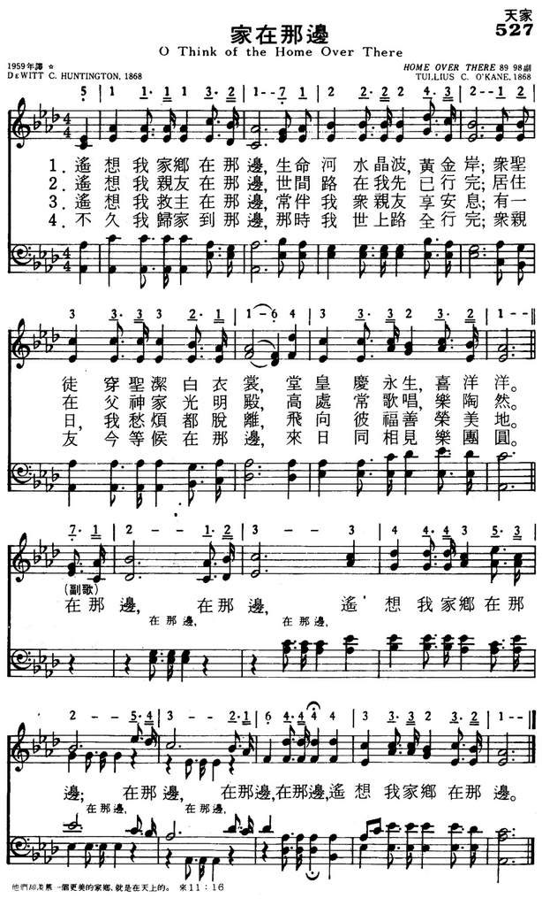
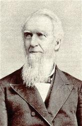

|
|
|
|
1 O think of the home over there, Refrain: 2 O think of the friends over there, 3 My Saviour is now over there, 4 I’ll soon be at home over there, |
527家在那边
1.遥想我家乡在那边，生命河水晶波黄金岸；
众圣徒穿圣洁白衣裳，堂皇庆永生，喜洋洋。 在那边，在那边，遥想我家乡在那边； 在那边，在那边，在那边，遥想我家乡在那边。 2.遥想我家乡在那边，世间路在我先已行完； 居住在父神家光明殿，高处常歌唱，乐陶然。 3.遥想我家乡在那边，常伴我众亲友享安息； 有一日，我愁烦都脱离，飞向彼福善荣美地。 4.不久我归家到那边，那时我世上路全行完； 众亲友今等候在那边，来日同相见，乐团圆。 |
|
https://www.mred365.cn/szxg/7530.html
 https://hymnary.org/hymn/SS4C1956/page/337
|
|
|
|
|

-

CD10 12家在那边 https://youtu.be/xSnpsOKkrLk 词/DeWitt C.HUNTINGTON 曲/Tullius C.O`KANE -
選本詩歌353首_266我想我家鄉在那邊 https://youtu.be/1FTzpfT7tXc -
https://youtu.be/AbjsMW2QIYo
| Text: | O Think of the Home Over There |
| Author: | D. W. C. Huntington |
| Tune: | [O think of the home over there] |
| Composer: | T. C. O'Kane |
| Short Name: | DeWitt Clinton Huntington |
| Full Name: | Huntington, DeWitt Clinton, 1830-1912 |
| Birth Year: | 1830 |
| Death Year: | 1912 |
Rv DeWitt Clinton Huntington USA 1830-1912.

Born at Townsend, VT, one of nine siblings, he attended Syracuse University, NY, and was ordained a Methodist Episcopal minister in 1853. He married Frances Harriett Davis in 1853, and they had three children: Charles, Thomas, and Horace. After her death in 1866, he married Mary Elizabeth Moore in 1868, and they had a daughter, Mary Frances. He pastored in Rochester, NY, (1861-71 & 1876-79), Syracuse, NY, (1873-76), Olean, NY, (1885-89), Bradford, PA, (1882-85 & 1889-91), and Lincoln, NE, (1891-96), where he became a Methodist District Superintendent of relief work. At his pastorate he also personally designed and oversaw construction of a brick sanctuary seating over 1100 people. A depression in 1893 caused him to forego salary for a number of months while pastoring. As things improved, he designed an addition to the church that was finally built two decades later. He was prevailed upon to serve as Chancellor of Nebraska Wesleyan University (1898-1908), at first without pay, and asked more than once to stay after desiring to retire. In 1908 he became Chancellor emeritus and assumed the role of professor of English Bible & Ethics. He also wrote several books, one titled, “Is the Lord among us?”. Another: “Half century messages to pastors and people”. Another: “A documentary history of religion in America since 1877”. He also served on the boards of the local telephone company and Windom Bank. He contracted pleura-pneumonia and died in Lincoln, NE. A Lincoln, NE, street is named for him, as is an elementary school. He was opposed to football, thinking it had no place in a proper Christian institution, but football was re-instituted at the college after his death.
John Perry
Tune Information
| Title: | [O think of the home over there] (O'Kane) |
| Composer: | T. C. O'Kane |
| Meter: | 8.9.9.8 with refrain |
| Incipit: | 51111 32171 22224 |
| Key: | A Major |
| Copyright: | Public Domain |
| Short Name: | T. C. O'Kane |
| Full Name: | O'Kane, T. C. (Tulius Clinton), 1830-1912 |
| Birth Year: | 1830 |
| Death Year: | 1912 |
O'Kane, Tullius Clinton,
an American writer, born March 10, 1830, is the author of "O sing of Jesus, Lamb of God" (Redemption); and "Who, who are these beside the chilly wave?" (Triumph in Death), in I. D. Sankey's Sacred Songs and Solos, 1878 and 1881.
--John Julian, Dictionary of Hymnology, Appendix, Part II (1907)
===========================
Tullius Clinton O'Kane was born in Fairfield County, Ohio, March 10, 1830. He resided with his parents in this vicinity until the spring of 1849, when he went to Delaware, Ohio, and entered the Ohio Wesleyan University, from which he graduated in 1852, with the degree A. B., and received his A. M. degree three years later from his Alma Mater.
Immediately upon his graduation, he was tendered a position in the Faculty as Tutor of Mathematics, which he accepted and successfully filled for five years. The students always called him "Professor," by which title he is known to the present day.
His musical abilities were early recognized in the University, and for years he was the musical precentor in the daily chapel devotions. He organized and maintained a Choral Society in the College, and was the first musical instructor in the Ohio Wesleyan Female College, which a few years ago was incorporated into the University.
In 1857 he was elected to a principalship in the Cincinnati public schools, and served in that capacity until 1861, when he resigned his position to accept a place in the piano establishment of Philip Phillips & Co. He remained with this house until its removal to New York City in 1867, when, although urged to be transferred with the house to that city, he preferred to remove with his family back to Delaware, Ohio.
For the ensuing six years he traveled over the state of Ohio as the general agent for the Smith American Organ Co., of Boston, Mass. During this time he visited conferences, Sunday-school conventions, both State and County, introducing his Sunday-school singing books, and in this way became well known throughout his native state, and quite extensively in some of the adjoining states.
His musical compositions were first published in Philip Phillips' Musical Leaves, in 1865, and since then but few Sunday-school singing books have appeared without one or more of his compositions.
His first music book, Fresh Leaves, was issued in 1868. This was followed at intervals by Dew Drops, Songs of Worship, Every Sabbath, Jasper and Gold, Redeemer's Praise, Glorious Things and Morning Stars. In connection with his son, Edward T. O'Kane, who is himself a most excellent composer and a very skillful organist, in 1882 he issued Selected Anthems, a book designed for use by the more advanced choirs. In association with J. R. Sweney and "Chaplain" McCabe, he issued Joy to the World, a song book for prayer-meetings, and the same editors, with the addition of W. J. Kirkpatrick, compiled Songs of Redeeming Love, No. 1, in 1882, and No. 2 in 1884. He also issued Songs of Praises, Unfading Treasures and Forward Songs.
Some of Professor O'Kane's best known songs are Glorious Fountain, The Home Over There, On Jordan's Stormy Banks, Say, are You Ready? and many others. With Mr. O'Kane, music and musical composition have ever been a recreation, rather than a profession. He is an excellent leader of choirs, but his forte seems to be in leading large congregations, Sunday-schools and social religious meetings in sacred song. He sings "with the spirit and the understanding also " — with a due appreciation of both words and music — and very naturally infuses his enthusiasm into his audiences so that they cannot "keep from singing." In his music he endeavors to catch the spirit of the hymn, and then give it expression in the music he composes for it. This sometimes seems to have been almost an inspiration, and could be illustrated by a reference to the circumstances under which many of his compositions have been made.
One of his earlier and more widely known pieces is that entitled, Over There. He says he cut this hymn out of some newspaper and put it with others in his portfolio, intending some time when he felt like it to give it a musical setting. One Sunday afternoon, after studying his lesson for the next session of his Sunday-school, he opened his portfolio, and turning over the selections, found these words, and something seemed to say, "Now's your time." He sat down at the organ, studied the hymn intently for a few moments, and then, as his fingers touched the keys of the instrument, melody and harmony were in every movement, and when the stanza was ended, melody and harmony found their expression in the chorus, and Over There was finished.
Another of his well known songs is Sweeping Through the Gates. One cold, blustery day he had occasion to go from his residence to the railroad depot, about a mile distant, and in his route had to cross the river on a suspension foot-bridge. As he came down to the bridge, he thought of the "river of death," so cold, with no bridge, and then the words of the dying Cookman came to his mind, and he exclaimed to himself:
'Who, who are these beside the chilly wave? "
Words, melody and refrain seemed to come all at once and all together, so that by the time he arrived back at his home, the composition was complete.
Professor O'Kane is a genial, modest Christian gentleman, who carries sunshine wherever he goes. His greatest joy comes from the consciousness that his music has cheered and comforted the hearts of Christian people all over the world, and has been the means of winning thousands from the pleasures of the world to the higher enjoyments of the Christian religion. His song, Sweeping Through the Gates, will be sung till all the ransomed are gathered Over There.
-Hall, J. H. (c1914). Biographies of Gospel Song and Hymn Writers. New York: Fleming H. Revell Company.
========================
O'Kane, Tullius Clinton. Died 10 February 1912, Delaware, Ohio. Buried in Oak Grove Cemetery, Delaware, Ohio.